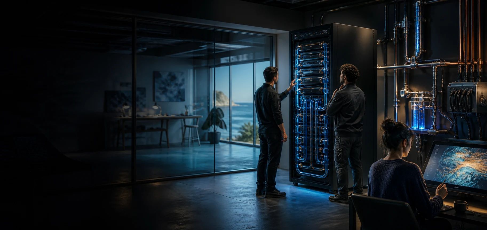

Chosen network links
Protocols for exchanging selected outputs or methods with other nodes.

The hardware reference is deliberately concrete. The purpose remains open: a locally operated pool of computing power for media, learning, modelling, sensing and cultural projects with permission.
GB200 NVL72 is a rack-scale computing system. Here it gives the conversation a concrete middle scale between personal workstations and distant hyperscale infrastructure.
Protocols for exchanging selected outputs or methods with other nodes.
Media tools, learning environments, models, maps, simulations and operational services.
Who holds material, who accesses it, why it is used, and where it stays.
Operators, creators, maintainers, learners, cultural custodians and project partners.
The rack, network, storage, power, cooling, fire protection and secure rooms.
A clear set of ordinary workloads makes maintenance, training and cost visible.
Data, model weights, logs, keys, backups and recovery arrangements each need an answer.
Technical administration and cultural permission are different responsibilities.
Power, connectivity, cooling and service priorities change when outside links fail.
Portability and documented recovery reduce dependence on one vendor or generation.
A pilot is useful when its results leave room to stop, adjust or grow.
Final configuration, building, power, liquid cooling, fire protection, network design, lifecycle cost and service arrangements develop from measured workloads and a real Dunwich site pathway.
The current NVIDIA page anchors the rack-scale discussion while the repeatable plan stays vendor-neutral and generation-flexible.
View NVIDIA GB200 NVL72